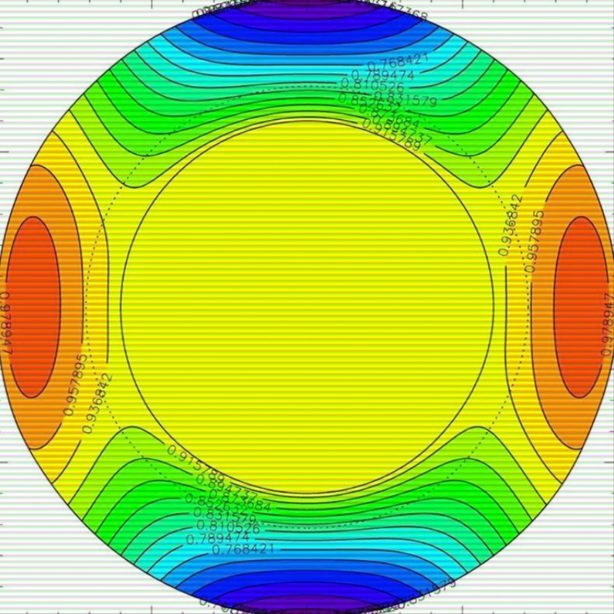
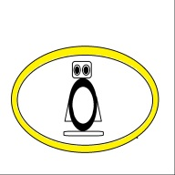
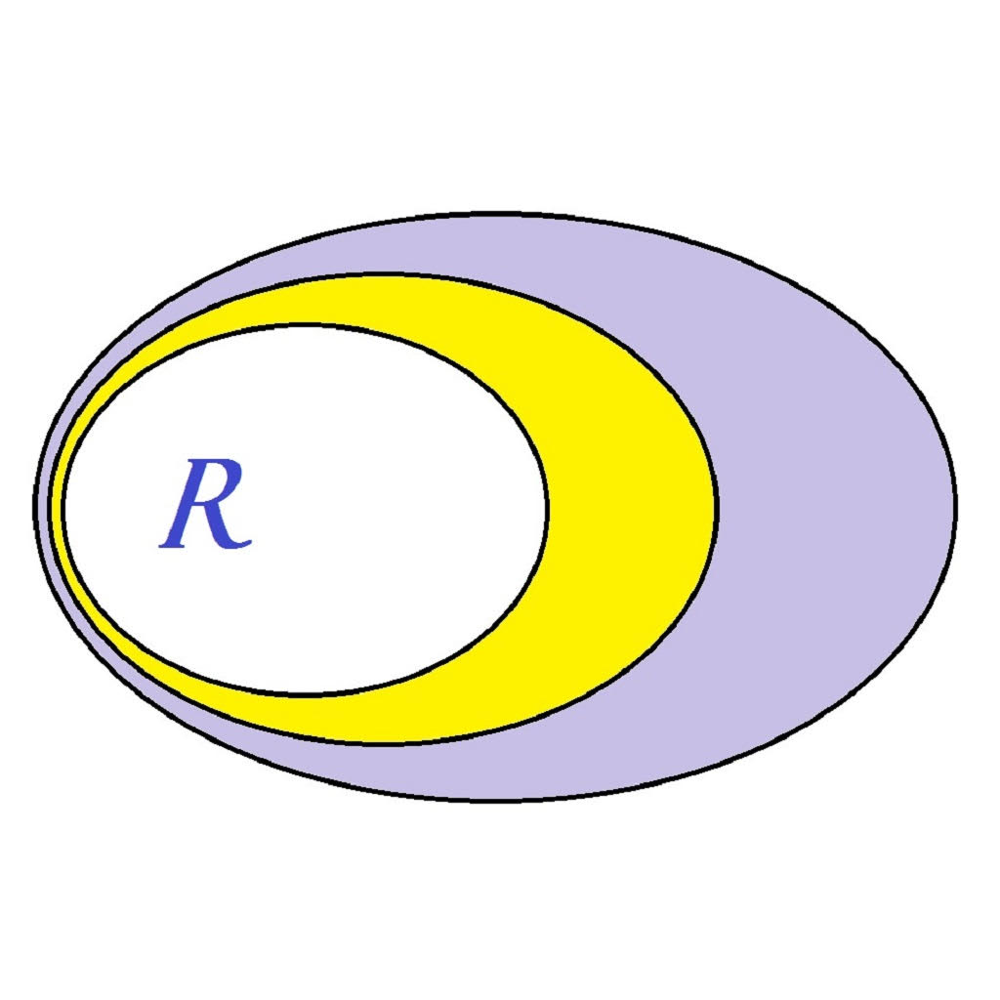
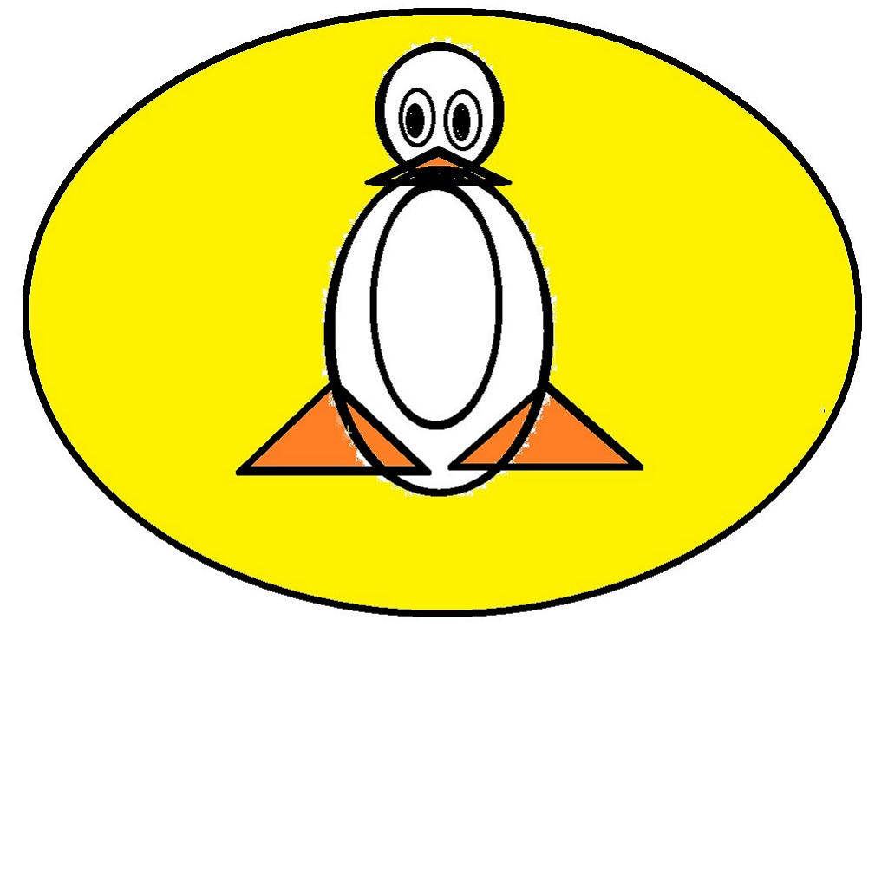

Review: Linux Open House (2024)

Linux Emulators and More!!
Apps for web browsers and iPhone/iPad devices

jor1k-Linux
DEMO
GitHub
App Store
R-StatsCalc
DEMO
GitHub
App Store

webR
DEMO
GitHub
App Store
Apps for web browsers: Work in Progress ...
The NEW versions contain:
the gcc compiler, version 9.5.0, with the binaries
to run c, c++, gfortran, go, d
and a directory with test-scripts

jsLinux: x86
DEMO
Math Hikers
App Store
jsLinux: riscv32
DEMO
Math Hikers
App Store
NEW
jsLinux: riscv64
DEMO
Math Hikers
App Store
NEW
Go to the top